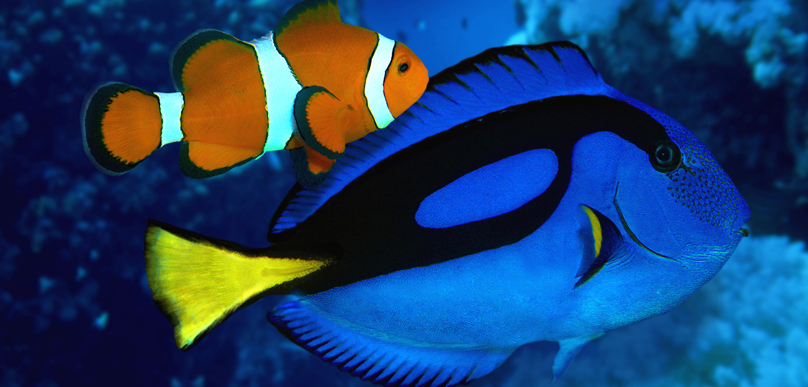

Eric Cassiano walked into a windowless room at the University of Florida’s Ruskin campus on a humid spring morning in 2014. A few kilometers away, anchored sailboats bobbed in the marinas of Tampa Bay. Inside the Tropical Aquaculture Laboratory (TAL), the biologist’s destination was a much smaller body of salt water: a 210-liter tank filled with flea-sized baby fish struggling to survive—the latest attempt to conquer what had become equal parts scientific puzzle, conservation quest, and race against Disney. The goal of the experiment was simple: to raise in a lab, for the first time, Pacific blue tangs from freshly laid eggs to fully formed iconic reef fish. But success had been elusive. And after dozens of failed attempts over many months to raise the oval-shaped, yellow-streaked blue fish, pressure was now mounting from an unexpected source: Hollywood. Next month, Walt Disney Pictures will release the Pixar-produced film Finding Dory, starring the chatty and forgetful blue tang who played a supporting role in Finding Nemo, the 2003 animated hit about a young clownfish. After Nemo hit the big screen, sales of orange and white striped clownfish rose by as much as 40 percent, according to some estimates. Conveniently, clownfish are simple to breed in captivity, and demand was easy to satisfy. When a similar rush for pet Dories inevitably follows the new film, fragile coral reef environments are likely to suffer. That’s because even though Dory was a model of resilience and optimism in her perilous quest to rescue Nemo from a dentist’s office fish tank, young blue tangs have proven much less hardy inside lab tanks. As Dory graduates from sidekick to leading lady, the lack of a captive-bred option will drive collectors to source more blue tangs from the wild—a harvest that’s often unregulated and destructive. Clownfish (or clown anemonefish) are native to tropical waters in the Pacific. Unlike blue tangs, they can be raised in captivity. Photo by Reinhard Dirscherl/Corbis Dory was, as usual, in the back of Cassiano’s mind when he arrived at work that spring day. And he was eager to check on the not-yet-fish, which were defying expectations. Two weeks earlier, 4,000 eggs had hatched into nearly invisible larvae inside a cylindrical tub big enough to fit several toddlers. And while most previous trials had ended around day six, these fishlets lived on. When the larvae surpassed another typical crunch point at 11 days, Cassiano wondered if they would finally make it. “You try not to get too excited because there’s a lot of disappointment,” he says. “But it was awesome.” Then came the beginning of the end. Cassiano noticed that the larvae looked pinheaded, which meant they weren’t eating. Some were swimming in tight little circles, also a sign of demise. On day 17, a photograph taken of one member of the batch captured a mostly translucent, two-millimeter-long body with a splotch of yellow beneath a ghostly blue eye: a fish in a state of becoming. By day 20, all were dead—another setback on a long road with a now imminent deadline. “When Finding Dory comes out, my personal opinion is that people won’t be able to buy enough [blue tangs],” Cassiano says. “That leads down the dark path of how we are going to get more of them. And that could be a problem.” Every year, a sprawling network of collectors, distributors, wholesalers, and pet stores channels an estimated 20 to 24 million ocean animals into two million homes and public aquariums around the world, according to rigorous analyses by Andrew Rhyne, a marine biologist at the New England Aquarium and Roger Williams University in Bristol, Rhode Island. Demand is highest in the United States, where over the course of a year spanning 2004 and 2005, Rhyne and colleagues documented the import of 11 million marine creatures, including more than 1,800 species of ornamental fish, along with corals, urchins, and other creatures that create mini-ecosystems within the confines of glass tanks. The annual tally includes as many as 300,000 blue tangs traded globally, Rhyne says, an estimate based on analyses of 11 years of data in the United States. Still, he adds, putting hard numbers on the full scope of the marine aquaculture trade is extremely challenging. The retail value of the global industry, for example, is often given a rough estimate of between US $ 200 million and $ 330 million spent on fish by consumers, but those estimates are based on 15-year-old data, and, really, “we have no clue,” Rhyne says. “It could be worth a lot more.” As a whole, the industry is not renowned for its environmentally friendly business practices. The waters in the Coral Triangle, the region around Indonesia and the Philippines, supply most marine aquarium fish sold worldwide. And without regulations to control collections, this region also suffers most from damaging collection techniques. Some collectors there still use cyanide, a chemical poison that temporarily paralyzes fish and harms corals. Even in Hawai‘i, which also supplies aquarium fish and where protected areas offer refuge, some activists and dive operators are pushing for legislation that would ban fish collecting. That movement is fraying nerves among aquarium and hobbyist insiders. If Hawai‘i closes its reefs, ethically sourced tropical fish will become harder to find, putting yet more pressure on places where destructive practices persist. Breeding ornamental fish in captivity would solve many of these problems, but it hasn’t been so easy. Even though modern aquaculture has produced dozens of viable varieties of farmed fish—including many of the catfish, trout, and tilapia that people eat—most are freshwater species that produce prodigious loads of eggs and relatively large larvae that are fairly simple to raise. Some ocean ornamentals, including clownfish, are already in regular production, too. But many other marine varieties have been tougher to domesticate, particularly smaller reef species like blue tangs. Cassiano’s group is not the only one that has been grappling with that problem for a long time. In 2000, a team at the Oceanic Institute (OI), an affiliate of Hawai‘i Pacific University, began what would become a marathon effort of trying to breed yellow tangs, which define Hawai‘i’s snorkeling reefs with streaks of electric yellow. It took five years just to coax mature yellow tangs to produce viable eggs that would hatch in lab tanks. When the translucent eggs burst open, larvae emerged alongside a vexing problem: what do you feed to newborn fish that are smaller than poppyseeds? A school of tropical yellow tangs. To avoid the potentially destructive wild harvest of yellow tangs for the aquarium trade, researchers in Hawai‘i are attempting to raise this species in captivity. What they learn also helps researchers trying to grow blue tangs. Photo by Quincy Dien/Design Pics/Corbis “They were tinier than anything anyone had ever worked with before,” says Chad Callan, director of the finfish program at the OI. Like other breeders, his team had long depended on rotifers, a type of zooplankton, as a first food for many fish larvae. But rotifers were too big to fit in the mouths of infant tangs. Instead, the team would need to use smaller zooplankton called copepods, which baby tangs eat in the wild. But copepods need to eat, too. And so, the task became like nesting one Russian doll into the next: they would need to raise algae to feed the copepods to feed the tangs. It wasn’t until 2010 that the team could reliably breed copepods and start, in earnest, with yellow tang feeding trials. They realized quickly that food wasn’t all that mattered. Like bakers working to make the perfect soufflé, the researchers fiddled endlessly with variables inside tanks to create just the right environment for larvae to thrive. Finally, they settled on water warmed to 27 °C, with enough air and water flow to push larvae around without knocking them into walls. Tanks had white bottoms, black walls, and one fluorescent light bulb overhead—like a mix between a casino and an interrogation room. Gradually, a growing proportion of trials survived past the first-feeding point (after larvae had consumed their yolk sacs) to another bottleneck about a week after hatching. Then came a breakthrough in January 2014, when a batch of larvae lived for 30 days. Over the next few weeks, though, the ghostlike, translucent creatures gradually starved to death. The team named the last one Lucky. By day 83, even Lucky was gone. “I really did think I was going to go to the grave without having cultured these fish,” Callan says. That history of failure explains why Callan spoke with hesitation about a far more dramatic milestone that came in the fall of 2015, when his team reared a yellow tang trial past 30 days yet again. This time, given a wider variety of food earlier, they tripled in size over the next month. Soon, hints of yellow appeared. Then came little scales. Around day 55, planktonic larvae began to “settle” into recognizable fish, each about the size of a nickel. The crop had started with about 20,000 eggs; by mid-October, the Hawai‘i lab was home to 150 fully formed juvenile yellow tangs—a far better survival rate than in the wild, where Callan suspects fewer than one percent and possibly less than 0.1 percent of hatched fish survive. Over drinks and lunch at the Kona Brewing Company, the team of 10 researchers celebrated their historic accomplishment. But to Callan, the success seemed surreal. “People are frustrated with me that I’m not more excited,” says Callan, whose team has since settled two more batches of yellow tangs. “It’s just been so long that I almost don’t know what to do with it at this point. I’m really thrilled, and I know a lot of people around the world are excited that we’ve shown that it can be possible, and I think that’s slowly sinking in. I also know much work is left to be done.” Looming particularly large is the Herculean task facing his colleagues at the lab in Florida: breeding Dory. In 2009—while Callan was struggling to convince his fragile yellow tanglets to eat, and still a few years before Pixar would announce the development of Finding Dory—Judy St. Leger, vice president for research and science at SeaWorld Parks & Entertainment in San Diego, met with colleagues to discuss a troubling question: how could aquariums tell convincing stories about conservation while sourcing so many fish from the wild? Months of subsequent meetings with scientists, wholesalers, pet store executives, and aquarium representatives led to the Rising Tide Conservation initiative, which aims to make large-scale tropical marine aquaculture feasible, so that aquariums and stores can meet demand for fish with minimal wild harvest. Funded by the major pet retailer Petco and SeaWorld, among other groups, Rising Tide developed a list of priority species, including blue and yellow tangs. The program supports both Callan’s lab and Cassiano’s. Researcher Eric Cassiano looks over the brood stock of Pacific blue tangs at the University of Florida’s Tropical Aquaculture Lab in Ruskin, Florida. Photo by Matthew Wittenrich Funding comes with an unusual new twist: absence of secrecy. Contrary to the competitive and often underground history of the field, Rising Tide collaborators make their findings public, with an enthusiastic blog that documents research ups and downs. From milletseed butterflyfish and melanurus wrasses to Koran angelfish and crested oyster gobies, each fish has its own challenges. It’s a potentially monumental shift. “In the past, a person may have bred an angelfish, but all the information was kept secret,” says Gary Violetta, curator of fishes at SeaWorld of Orlando. “With Rising Tide, [everything] is transparent.” So far, collaborators have reared more than 20 species of tropical marine fish and have put three into commercial production. Along with work elsewhere, several dozen marine fish species now circulate commercially, says Sandy Moore, president of Segrest Farms, one of the world’s largest wholesalers of ornamental fish. She sees signs of growth. Today, 11 percent of her Gibsonton, Florida company’s marine fish come from captive-bred sources, compared with just five percent a handful of years ago. “The marine [breeding] business is in its infancy,” she says. “But it’s making huge headway.” Headway can’t seem to come fast enough on the blue tang effort, which started in the Tropical Aquaculture Lab in 2012 with a long string of failures as batch after batch of newborn larvae died, much like the yellow tangs did in Callan’s lab more than a decade earlier. With time came progress. And by November 2013, not long after Pixar confirmed its plans for Finding Dory, larvae were consistently getting past the six-day bottleneck before dying around day 11. When the last survivors of that hopeful batch in the spring of 2014 lasted nearly three weeks, it seemed like the team was on the right track. Then came months with no progress before one trial at the end of last year again made it to 20 days. Another lasted 22 days before failing around Christmastime. Both trials occurred in much larger tanks, a change the Florida team made after seeing what Callan did with his yellow tangs. Other teams are working on blue tangs, too, with limited success. In 2013, a group in Taiwan reported a survival record of 26 days, but they haven’t issued any updates since. Efforts at another University of Florida lab in Fort Pierce keep stalling out by day 12. Private companies are also likely on the case, says Matthew DiMaggio of the TAL team, but they tend to be more secretive. The TAL researchers have learned to accept working in a state of suspension between hope and dismay in a field where progress is nonlinear. “You think you’re going to do it, that this is it,” Cassiano says. “And then your tree gets chopped down.” Still, the work goes on, and the researchers continue to tinker with their methods, including adding probiotic treatments and altering environmental conditions. “Lighting, water flow, stocking density,” DiMaggio says. “You name it, we’ve tried to manipulate it.” It took Callan’s team 15 years to successfully raise yellow tangs in Hawai‘i, after all, a huge head start over the effort in Florida, which began just four years ago. But with the rapidly approaching premiere of Finding Dory, the clock is ticking faster this time. On Facebook, Dory has accumulated more than 25 million likes. How many of those fans will soon want Dorys of their own? “That deadline is there, and we’re very cognizant of it,” DiMaggio says. “The breakthrough could happen tomorrow, and we’ll have that aha moment. That’s what we all hope for every day.” Perhaps Dory’s story holds hidden premonitions, albeit skewed by geographical error. According to rumors, the new film takes Dory on a journey to the place of her birth: a research facility in California.
Visit Fish page :P